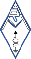

ARM
Home
Sobre a ARM ▾
A nossa História
Corpos Sociais
Estatutos
A nossa Sede
Proposta de Sócio
Rede ARM ▾
Repetidores Analógicos
Repetidores DMR
Digipeater APRS
Ser Radioamador
Contactos
Área do Sócio 👤
Direção 🔑
✉️